Github gyorstalpaló egyetemistáknak
Avagy hogyan csináljunk egy bolt modellt
Ez egy gyors és rövid (és talán egy picit informális) áttekintője a git és githubnak leginkabb
egyetemistáknak.
Miért használjunk git/githubot egyáltalán?
- Nagyon gyors és könnyű elérhetőség az összes eszközünkön és a programkód könnyű
megosztása.
- Könnyű rendszerezés és átláthatóság.
- Képesek vagyunk visszaállítani a kódbázisunkat egy múltba lévő állapotba.
- Egy ipari standard ami a későbbiekben (pl. munka gyakorlatnál) hasznos lesz.
Szóval hol kezdjünk?
Töltsd le a gitet a git letöltő oldaláról a neked megfelelő
operációs rendszerre.
Amikor futtatod a telepítőt akkor nem nagyon kell változtatnod semmit az alapbeállításokon.
Szóval van gitünk, de most hogyan?
Mielőtt belekezdenénk, rajzoljuk fel, hogy nagyvonalakban hogyan lehet elképzelni ezt a gitet.
Képzeljünk el egy üzletet, ami 3 részből áll. A bolti rész(head/remote), a raktár(index)
és a gyár(local working directory). Ezt az egészet repositorynak hívják.
Na ezt fogjuk megpróbálni felépíteni elemenként.
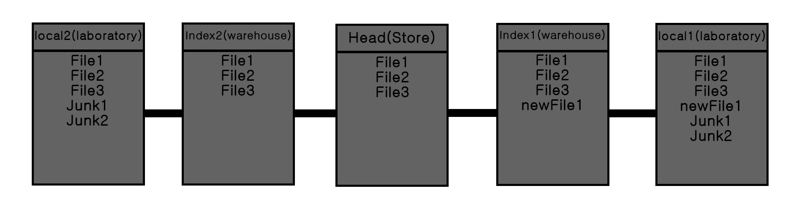
A legelső lépés a termékek legyártása lesz. Navigáljunk egy kiválasztott mappába,
nyissunk meg egy terminált és írjuk be az alábbi parancsot:
Megjegyzés: A git repository az gyakorlatilag egy rejtett mappában van(.git). Ha esetleg
ki szeretnénk törölni a repositoryt, elég csak a rejtett mappát kitörölni és kész.
És ezzel meg is van a git repositorynk alapja.
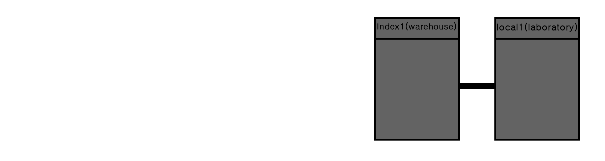
Csináltunk pár új terméket(kódfájlt), hogyan raktározzuk el őket?
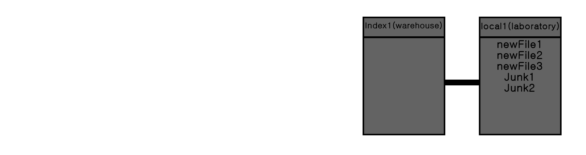
Ahhoz, hogy hozzáadjuk a termékeinket(kódfájl) a raktárhoz(index), ahhoz használjuk:
Megjegyzés: Itt lehet használni azokat a formázásokat amiket tanultunk számítógépes
rendszer órákon.
Ebben az esetben, a * azt jelenti hogy mindent hozzáadunk a raktárhoz(még az almappákat is).
Ugyancsak lehet használni '.'-t is ugyanerre.
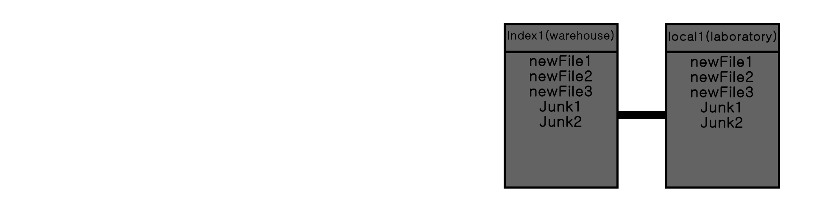
Most hogy teljesen feltöltöttük a raktárat(index), akarunk egy nyilvántartást/leltárt(commits) tartani
róla.
Mikor pontosan milyen termékek(fájlok) voltak a raktárban(index), ki mikor fért hozzájuk és változtatott
meg valamit.
Ahhoz, hogy egy újabb nyilvántartást/mentéspontot(commit) hozzunk létre, az alábbit kell
használni:
git commit -m "Commit message"
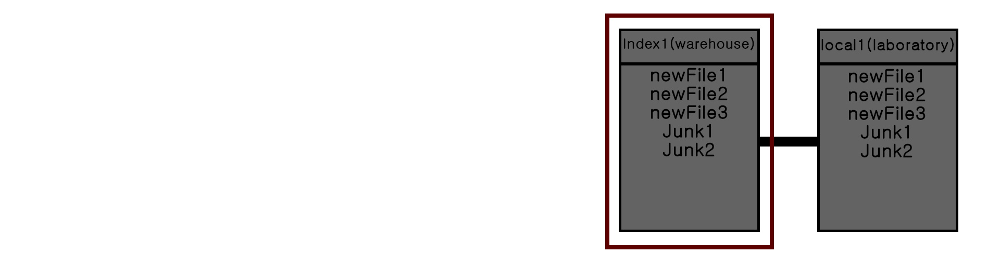
Az üzletben(repository) minden egyes múltbeli mentéspont(commit) el van tárolva és bármelyikre
visszaállíthatjuk az üzletet.
Csodás, de hol van az üzlet(remote/head)?
Először regisztráljunk fel a githubra és csináljunk egy új repositoryt ott.
Ezzel létrejött egy üzlet(remote/head). Viszont még teljesen üres. Ahhoz, hogy fel tudjuk
tölteni a kirakatot(remote/head) a raktárban(index) lévő dolgokkal, össze kell kapcsolni a két teret.
Ezt megtehetjük a következő paranccsal:
git remote add origin "git repository link"
Ahol helyettesítsük be a "git repository link"-t a github repository linkjével.
Most, hogy összekapcsoltuk a kettőt, feltölthetjük az üzletet(remote/head) a legutóbbi nyilvántartás(commit)
alapján.
Erre használjuk először ezt a parancsot:
A továbbiakban használhatjuk szimplán a "git push"-t.
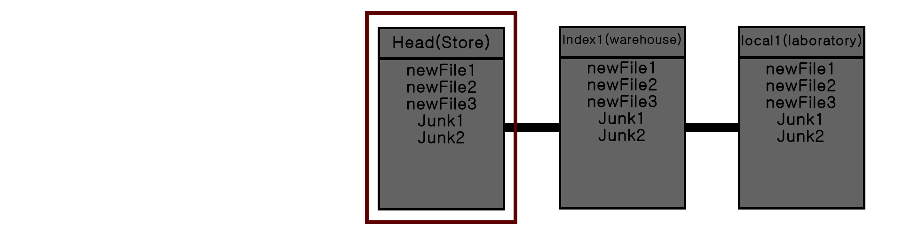
És ezzel, sikeresen feltöltöttük és megnyitottuk a publiknak a legelső üzletünket(remote repository).
De mi történik akkor, ha hazamegyünk és onnan is akarnánk dolgozni?
Ezt az esetet képzelhetjük úgy, hogy megy a business és meg akarunk nyitni egy új raktárat és gyárat.
Erre bár használhatunk "git init"-t, de akkor az új raktár+gyár(local repository) üres lesz.
Jobb lenne ha az új raktár+gyár(local repository) a már az üzletben levő termékekre(fájlok) épülne.
Ezt megtehetjük ezzel:
git clone "git repository url"
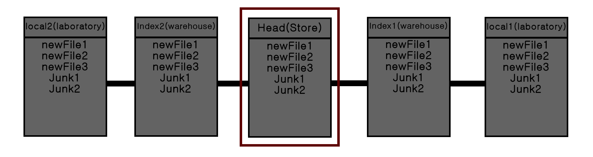
Ezután használhatjuk a local repositoryt normális módon.
Ugyancsak megjegyzendő hogy a "git clone"-t elég csak egyszer meghívni az elején.
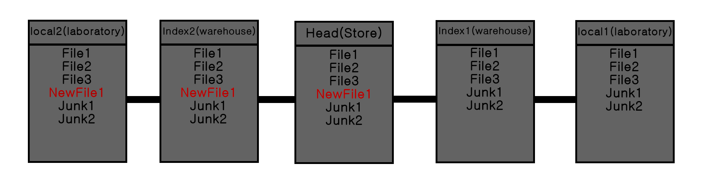
Ezután, minden egyes alkalommal amikor belépünk egy számítógépre(ahol korábban már dolgoztunk és már van git
repo),
akkor ezt használjuk:
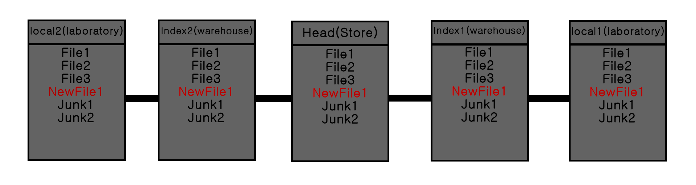
Van egy tucatnyi fölös fájlunk ami nem kell?
Sokszor megesik, hogy nincs szükség egyes fájlokra. Ilyen lehet például az IDEk által generált
fájlok, vagy az objektum és futtatható állományok. Ezek megnehezítik a projectek könnyú átláthatóságát
és még foglalják is a helyet fölöslegesen.
Ezekre az esekre lehet egy olyan fájlt csinálni ami megmondja a gitnek hogy mit ignorálhat amikor
a "git add" parancsot használjuk. Ez a .gitignore. Ezt a fájlt a gyökérmappába így hozhatjuk létre:
Ebbe a fájlba soronként beírhatjuk azokat a fájlokat amiket ignorálni akarunk. Itt is
használhatjuk a syámítógépes rendszereken vett formázásokat.
például ha ignorálni akarunk minden objektum és futtatható állományt:
"git add *" előtt
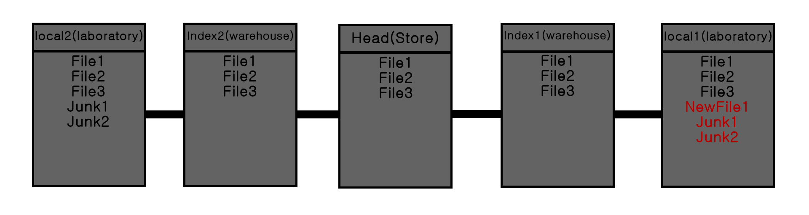
"git add *" után
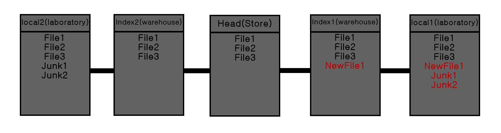
Most már tudnod kéne a gitet használni mindennapi szinten az egyetemi kódjaidhoz.
Gratulálok!
Parancsok listája a használatuk sorrendjében
| Command |
Leírás |
Használatuk |
| Inicializáció |
| Git init |
Létrehoz egy git repositoryt a jelenlegi mappában. |
Használd ezt a legeslegején, amikor még sehol nincs repository még. |
| Git clone "github repo url" |
Leklónol egy repositoryt egy remote repository-ról, megtartva az összes kapcsolatot és múltbeli git
adatot. |
Használd ezt akkor amikor egy új számítogépre lépsz be dolgozni. |
| Git pull |
Először fetch-eli a hozzácsatolt branchről a legújabb verziót és merge-li a local repository-val.
|
Használd ezt, hogy megszerezd az online legújabb verzióját egy olyan gépre amin már dolgoztál. |
| Add és remove |
| Git status |
Kiírja az index státuszát (követett fájlok, megváltoztatott de még nem követett fájlok). |
Használd arra, hogy ellenőrizd, hogy minden jól van követve a git által. |
| Git add "filename" |
Hozzáadja a fájlokat az indexhez. |
Használd ezt, hogy megmondd a gitnek hogy mely változtatásokat "mentse" el a következő commit-ban.
|
| Git rm "filename" |
Kitöröl egy fájlt a repository-ból. (--cached taggel az indexből szedi ki a fájlokat.) |
Használd ezt, hogy megmondd a gitnek hogy mely fájlokat törölje ki a következő commit-ban. |
| Commit és szinkronizáció |
| Git commit -m "Commit message" |
Létrehoz egy új commitet. |
Használd egy új mentési pont létrehozására. A commit message általában írja le hogy mi változott.
|
| Git remote add origin "github repo url" |
Összeköti a remote repository-t a helyi repository-val. |
Akkor használd amikor egy új github repot nyitottál és össze akarod kötni a helyi repoval. |
| Git push |
Kitolja a jelenlegi branchet(nem kell ezekről aggódni most) a remote repository-ra. |
Használd ezt hogy "feltöltsd" a változtatásaidat. Ne felejtsd el ezt megtenni minden
gyakorlat és otthoni munka után. |
Hova tovább?
A gitnek akkor jön elő az igazi ereje, amikor majd projectekhez használod és más emberekkel dolgozol.
A git használtata olyen környezetben jelentősen másabb lesz, de az még odébb van.
Ha többet akarsz tudni akkor ezeket ajánlom:
Készítette: Tran Bach Khoa (SAOF2T)